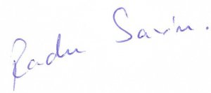

|
MEDIA
ProTV & Eurosport
Primul meu contact cu MEDIA a fost dintr-o intamplare. Era la vreo 3 ani dupa revolutie. O fi cu R mare? Tocmai incepuse sa emita Canal 31, un post nou care transmitea feedul CNN, baschet si schi. Se prindea pe o raza de 1km, adica la vreo 20 case si 15 blocuri, iar casa mea era in zona. Comentatorii de la schi erau Costi Mocanu si Sorin Enache. Nu erau ei foarte priceputi si mai scapau cate o greseala. Intr-o zi le-am facut o vizita si le-am povestit ce e cu portile alea rosii si albastre la slalom. Costi, mai orgolios, nu a ridicat ochii din calculator, Sorin insa m-a intrebat daca nu vreau sa comentez cu ei. Asa am ramas si am comentat sezonul 1993-1994 la Canal 31.
Tin m inte ca am muncit pe gratis mai bine de un an, insa eram atat de fericit sa comentez schi incat nimic nu ma deranja. Apoi, in 1995, Canal 31 a devenit ProTV, noi am fost angajati iar statutul nostru s-a schimbat. Toate televiziunile ne invidiau...
Din 1998 am trecut la Eurosport. Timp de mai bine de 10 ani am comentat cam tot ce se poate comenta: Campionate Mondiale, Jocuri Olimpice, Cupa Mondiala. Erau perioade cand aveam cate 6 ore de comentarii pe zi. In afara de schi am comentat o multime de alte sporturi: mountainbike, iahting, snowboard, schi freestyle, skateboard, sporturi de actiune etc. In 2009, in urma demersurilor facute de un oficial din Federatia Romana de Schi si Biatlon, nu am mai fost chemat sa comentez la Eurosport.
In 2005 am comentat la Telesport si TVSport - viitorul Sport.ro. Cum cei de la Telesport tocmai cumparasera PGA, in acel an am comentat mult golf.
Radio si Presa scrisa
Prin 2000 studioul Eurosport era intr-o cladire mare, pe Cheiul Dambovitei. Radio Contact avea sediul pe acelasi etaj cu noi. Intr-o seara, Alex Gheorghias, care avea o emisiune de muzica la Radio Contact, m-a invitat sa vorbesc despre cursele de schi. Nu cred ca m-am descurcat in mod exceptional, deoarece nu m-a mai invitat.
Mi-a placut insa sa trag concluzii, iar cand Andi Vilara mi-a propus sa fac acest lucru dupa fiecare etapa in revista Top Sport, nu am stat pe ganduri. Am scris un sezon intreg, apoi ziarul s-a desfintat. Nu am luat niciun ban (cine-l cunoaste pe Andi stie de ce), insa am fost remarcat de Cristian Topescu, care mi-a selectat un articol si m-a inclus intr-un club restrans si select al "prietenilor sai". Eram doar 5: eu, Doina Stanescu, Andi Vilara si alte doua nume de care nu imi amintesc. Stiu ca articolul era despre revenirea lui Herman Maier dupa accidentul de motocicleta.
Alte experiente jurnalistice am avut la Gazeta Sporturilor si Jurnalul National.
Apoi internetul a schimbat fata presei. Am descoperit blogosfera si, din 2008, am scris aici https://radusavin.blogspot.com, apoi aici: https://blog.radusavin.ro.
Despre personalitati intervievate
In august 2000 l-am cunoscut, la Zermat, pe Michael von Gruningen. Va mai amintiti de Mr. Giant Slalom? Tocmai schimbase schiurile. Trecuse de la Rossignol la Fischer si testa noul echipament. Noi coboraseram de pe Matterhorn si eram in trecere pe ghetar. Am fost profund impresionat. Am cunoscut un sportiv desavarsit si un om extraordinar. De-a lungul timpului am avut ocazia sa cunosc si alti mari oameni din sport: Bode Miller, Michaela Dormeister, Andy Finch, Stefan Gimpl, Mathieu Crepel, Kaj Zackrisson, Jacques Rogge etc. Cel mai mult m-a impresionat Miki Dorfmeister. Iar dintre romani, Ghita Muresan.
Despe Cupa Mondiala live
In februarie 2004 am asistat la primul concurs de Cupa Mondiala. Se intampla in Elvetia, la Adelboden, una dintre partiile celebre de GS. A fost o experienta unica. Au urmat alte experiente, dintre care cele mai impresionante la Kitzbuhel, Zagreb sau Wengen. In 2010 am urmarit pe viu Finala Cupei Mondiale de la GarmischPartenkirchen.

Inapoi la Meniu |